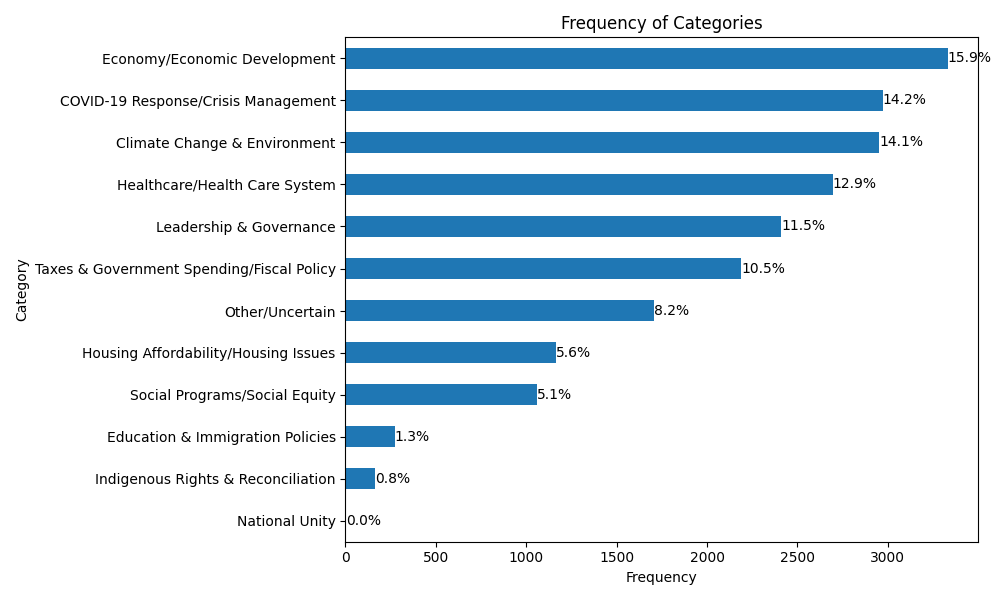

A simple system for classifying open-texts survey questions
By now, we all know that LLMs can code open-ended survey responses. It’s been documented, for example, in this study.
Andrei Burkov, in his LM book, writes (but gives no additional details):
"Advanced chat language models enable highly accurate automated document labeling through a panel of expert models. Using three LLMs, when two or more assign the same label to a document, that label is adopted. If all three disagree, either a human can decide, or a fourth model can break the tie. In many business contexts, manual labeling is becoming obsolete, as LLMs offer faster and often more reliable labeling."
What’s less clear is how well they do it, how to do it in practice; all the details ...
What I'm especially interested in is whether smaller, local models, can handle the task. Sometimes you don’t want to (or can't) send your data to commercial APIs. Maybe it's a privacy issue, maybe you just don’t feel like paying $8 per million tokens every time you want to analyze a batch of responses. Also, these models can change. We all agree there’s something nice and transparent with open models — even if it’s just the weights that are open and transparent.
One obvious problem: there's no clear ground truth for this kind of task. Say you have hundreds or thousands of open-text answers that were hand-coded into, for example, 12 categories by a human. That number is pretty arbitrary — you could’ve just as easily used 8, or 10, or 14 categories depending on your perspective or goals. There's a science to all this, of course, to inter-coder reliability (coding scheme validations, benchmarks, coders as randomly interchangeable, etc.) but ultimately it's still subjective. Some classification schemes are obviously bad, but defining what counts as "best" is not straightforward.
Anyways, after doing some planning with Claude and ChatGPT, I ended up with open-text-coder, a lightweight text classification system using LLMs and machine learning.
It has:
- Hybrid Classification: Uses LLMs to label a sample, then trains a fast ML classifier
- Multiple LLM Backends: Supports OpenAI and Ollama (local models)
- Translation Support: Built-in translation for multilingual datasets
- Category Generation: Automatically suggest categories from your data
- Multi-label Support: Classify texts into multiple categories
- Cost-Effective: Label only a sample with LLMs, predict the rest with ML
For the full pipeline, check the README.md chaining the pieces.
As an example, I ran it on the 2021 Canadian Election Study.

It works reasonably well, but it’s not perfect. The main issue is that I don’t have a gold standard to compare my results to—no definitive reference to tell me whether the classifications are actually “correct.” One way to validate might be to use a stronger language model as a kind of judge: send it some of the outputs and see how it evaluates them. But the best method would still be to compare to a real gold-standard dataset, which I don’t have at the moment.
One last thought: I’ve done similar experiments at work on related topics, and they were much harder. Here, things go more smoothly because the categories are relatively clear. But when the topic itself is fuzzy—even for humans—it gets tricky fast. Imagine asking people why they’re dissatisfied with how democracy works (I haven’t tested that question exactly, but you get the idea). The answers go in every direction: metaphors, personal stories, vague references to parties or politicians. It’s hard to know how many categories there should even be. Is general cynicism its own class? What about cynicism directed at the current government, or at a specific politician? Sure, you can ask a powerful LLM to generate categories, but this kind of task is fundamentally hard and very context-specific. That’s about all I’ve got for now: doing this stuff well is harder than I initially thought.